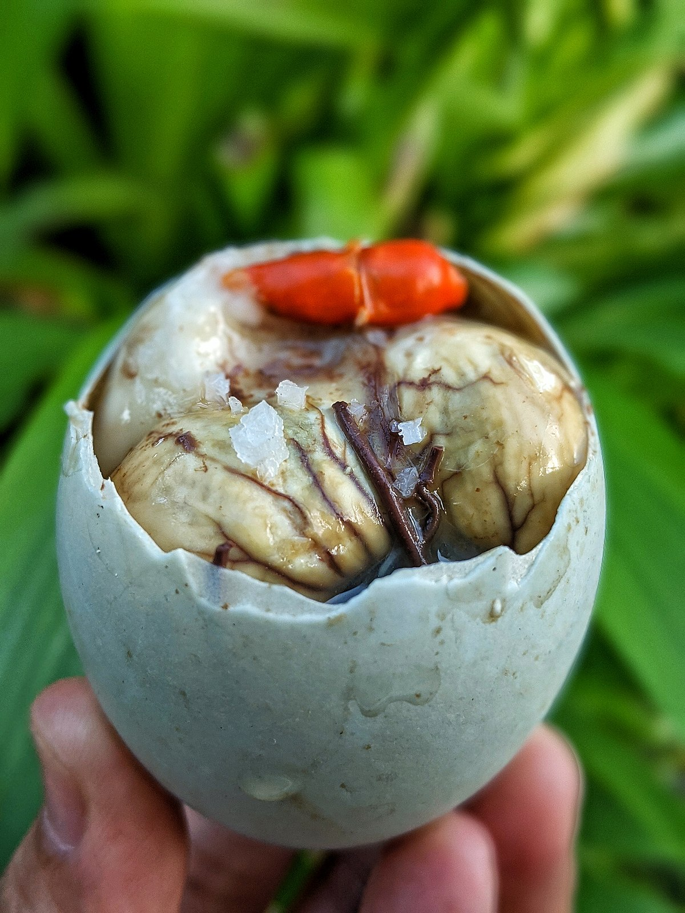

Balut (Philippines)
A fertilized duck egg with a partially developed embryo inside, boiled and eaten from the shell.
Hákarl (Iceland)
Fermented shark meat with a strong ammonia smell, aged for months to achieve its unique flavor.
Casu Marzu (Italy)

Sardinian cheese infested with live maggots, known for its creamy and pungent taste.
Fugu (Japan)
Deadly pufferfish prepared by highly trained chefs to eliminate its toxic parts.